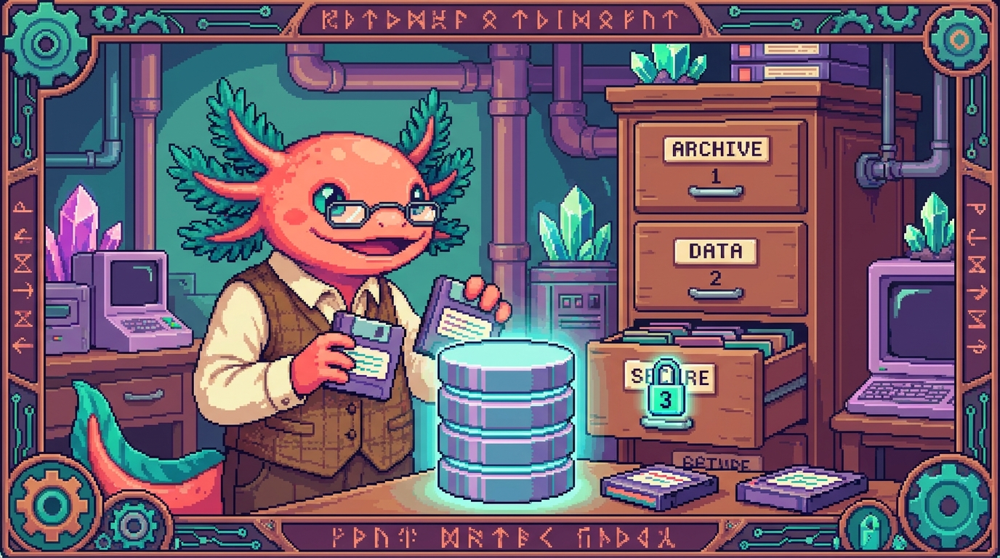

Módulo 07 — Bases de datos y SQL

Objetivo del módulo: entender dónde y cómo se guardan los datos de una app. Aprenderás qué es una base de datos, el lenguaje SQL para hablar con ella, y Supabase (la base de datos en la nube que usan RachaSimple y Faro), incluida la seguridad con RLS.
Hasta ahora tus datos vivían en variables que desaparecen al recargar. Una base de datos los guarda para siempre y los comparte entre dispositivos y usuarios. Es la "memoria a largo plazo" de una app.
¿De dónde sale esto en TUS proyectos?
RachaSimple y Faro guardan todo en Supabase (una base de datos Postgres). Tus
hábitos, check-ins, proyectos y fuentes viven en tablas, protegidas por RLS (cada usuario
solo ve lo suyo). PolyPaw, en cambio, usa un archivo JSON local (Módulo 04): aquí verás la
diferencia entre "guardar en un archivo" y "guardar en una base de datos de verdad".
¿Qué vas a poder hacer al terminar?
- Explicar qué es una base de datos relacional: tablas, filas y columnas.
- Escribir SQL para consultar (
SELECT), filtrar (WHERE) y ordenar datos. - Insertar, actualizar y borrar datos (
INSERT,UPDATE,DELETE). - Entender las relaciones entre tablas (claves primaria y foránea,
JOIN). - Saber qué es Supabase y cómo tus apps hablan con él.
- Entender RLS (seguridad por usuario) y por qué es vital.
Capítulos
| # | Capítulo | Qué cubre |
|---|---|---|
| 01 | ¿Qué es una base de datos? | Tablas/filas/columnas, relacional, por qué SQL |
| 02 | Consultar con SQL | SELECT, WHERE, ORDER BY, filtrar |
| 03 | Modificar y relacionar | INSERT/UPDATE/DELETE, claves, JOIN |
| 04 | Supabase: Postgres en la nube | Qué es, tablas, cómo la app se conecta |
| 05 | Seguridad: RLS y autenticación | Row-Level Security, login, por qué importa |
| 06 | Diseñar tablas: tipos y esquema | Tipos de Postgres, NOT NULL, DEFAULT, esquema |
| 07 | Claves y relaciones | Primary/foreign key, uno-a-muchos, CASCADE |
| 08 | Consultas avanzadas y JOIN | INNER/LEFT JOIN, subconsultas, paginación |
| 09 | Agregaciones y GROUP BY | COUNT/SUM/AVG, GROUP BY, HAVING, CASE |
| 10 | Índices y rendimiento | Qué es un índice, cuándo crearlo, EXPLAIN |
| 11 | Supabase a fondo | supabase-js, .from().select(), filtros, claves |
| 12 | Row-Level Security (RLS) a fondo | Políticas, auth.uid(), proteger datos por usuario |
| 13 | Migraciones y cambios de esquema | ALTER TABLE, versionar el esquema, seeds |
| 14 | Mini-proyecto: diseña una base de datos | La BD de una app de hábitos desde cero |
| 15 | Glosario de bases de datos | Todos los términos + mapa mental |
✅ Módulo 07 — versión ampliada (capítulos 01–15, ~100 páginas).
➡️ Empieza por Capítulo 01 — ¿Qué es una base de datos?.